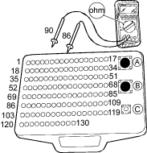
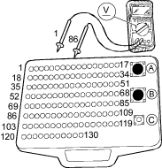

DTC P0192: Rail Pressure (RP) Sensor Circuit Low Voltage
- Check the ''On Board Diagnostic (OBD) System Check''.
Was the ''OBD System Check'' performed?
YES – Go to step 2.
NO – Go to OBD System Check. 
- Check the DTC.
Are there other DTCs P1627, P1618 (beside DTC P0192) being output?
YES – Go to DTC P1627, P1618 chart (5 V reference #2 circuit failure).
NO – Go to step 3.
- Check for the following conditions:
- Damage to the RP sensor.
Is a problem found?
YES – Repair as necessary.
NO – Go to step 4.
- Turn the ignition switch OFF.
- Disconnect ECM connector.
- Measure the resistance of RP sensor as below.
- Between terminal 86 and 90.

Is there about 0.9 – 1.3 Kohms (At room temperature: about 20°C (68°F))?
YES – Go to step 7.
NO – Go to step 9.
- Turn the engine ON at idling.
- Check the RP sensor signal voltage.

Is about 1 V indicated?
YES – Intermittent failure, system is OK at this time. Check for poor connections or loose wires at the RP sensor and at the ECM.
NO – Replace the RP sensor.
- Disconnect the RP sensor 3P connector.
- Check the RP sensor signal circuit for short.
Turn the ignition switch ON (II).

Is a problem found?
YES – Repair the RP sensor signal circuit for short.
NO – Go to step 11.